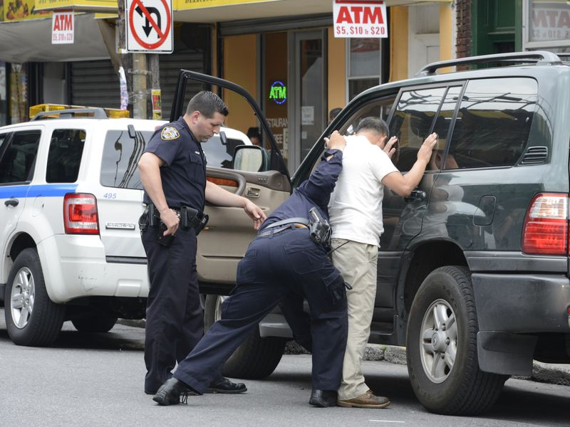

NYPD cops conducting a stop-and-frisk. (Anthony DelMundo/New York Daily News)
Make It Stop: Stop-and-Frisk
By: Kayla Boone | November 13, 2020
Stop-and frisk allows police officers to stop, interrogate and search New York City citizens on the sole basis of “reasonable suspicion.” In 2011, under the Bloomberg administration at the height of stop-and-frisk over 685,000 people
were stopped. Judge Shira A. Scheindlin ruled that NYPD’s stop-and-frisk tactics violate the U.S Constitution’s 4th Amendment
prohibition of unreasonable searches and seizures. Above is a chart that displays the stop-and-frisks performed in New York City during 2019.